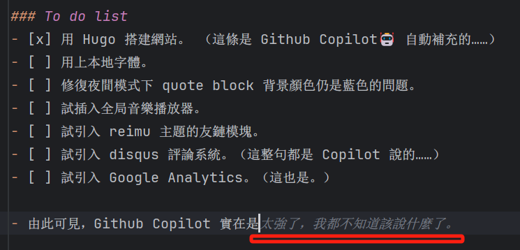

網站更新日誌
施工中……
To do list
-
用 Hugo 搭建網站。 （這條是 Github Copilot🤖 自動補充的……）
-
用上本地字體。
-
完善「語叢」的 css。
-
試插入全局音樂播放器。
-
試引入 reimu 主題的友鏈模塊。
-
試引入 disqus 評論系統。（這整句都是 Copilot 說的……）
-
試引入 Google Analytics。（這也是。）
-
搞一些花哨的效果。
-
配置圖牀，使用 jsDelivr & PicGo。
-
由此可見，Github Copilot 實在是太強了，我都不知道該說什麼了。 
-
上面這句當然也是它補充的。
231111
- 修復了夜間模式下 quote block 背景顏色仍是藍色的問題。
- 大概是主題作者忘了？
- 增加了「語叢」葉面，使用了 Artitalk。
231110
- 將正文以外的字體盡數 Google 化，詳見網頁源碼（喂
- 正文因預期的生僻字需求，仍使用本地字體。
- 更新域名至 beiruri-tears.me，有點貴😭。
- 不知道說什麼了，總之就是很開心。
- 讓 Copilot 幫我寫一句話吧：
這個網站的作者是一個很可愛的人，他很喜歡猫，也很喜歡狗，還喜歡鳥
- 謝謝 Copilot，我也很喜歡你（？），但是你怎麼不加句號？
- 遵照這篇文章爲 Github Pages 開啓了強制 HTTP。
231109
- 套用了本地字體
H-宮書（網站標題）、霞鶩文楷（中文正文無襯線）、Gill Sans MT（西文正文無襯線）。 - 壓縮了字體：
- 使用 Cloudconvert 將TTF格式字體轉換爲 woff2 格式。
- 使用 FontSmaller 將字體文件子集化，比如大標題的字體只「抱甕舘」三個字就夠用了。
- 😵 標題字體在 PC 端仍未生效：
⚠️Failed to decode downloaded font: http://blog.m7atk2700.top/scss/static/GungSeoex.woff2
⚠️OTS parsing error: Unable to instantiate font face from font data.- 可能是語言設置的緣故？
231108
- 從 Hexo 搬家到 Hugo。
- 琢磨了最基礎的 CSS 改法，並調用 Google Fonts API 的 Noto Serif SC 作爲缺省襯線體。
- 不知爲何調用本地字體（非本機字體）失敗。
- 網站在 Github Pages 上綫。
上次修改於 2023-11-11